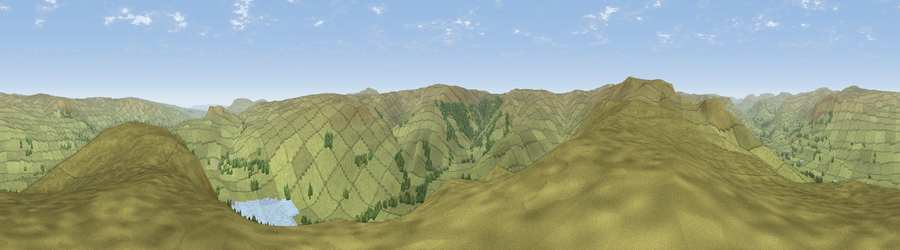

Viewpoint near Gayle
#10397 in England · top 24% of its area beats it · near GayleWhere it is
The exact computed spot (SD 90375 87675). Click the marker for map links.
The view, rendered

A 360° render of this exact spot computed from the terrain model, tree cover and land cover — summer colours, afternoon light, calibrated against photographs of famous viewpoints. Real trees, hedges and buildings will differ in detail.
The panorama
Grey silhouette: terrain skyline in each direction (720 bearings, Earth curvature and refraction included). Dashed green: skyline with trees (+15 m) and buildings (+8 m) as obstacles. Blue strip: how far the ground is visible on each bearing.
Where the view opens
Wedge length = distance to the farthest visible ground on that bearing (vegetation-aware). Rings at 10, 25 and 50 km.
What fills the view
93% grassland · 5% woodland · 2% water
Angular shares of the visible panorama (visual magnitude), not map area. Landscape diversity 0.13 (0–1 Shannon).
Key numbers
More beautiful places nearby
The staircase of upgrades: each row has a higher view potential than everything closer. Driving times are estimates from straight-line distance, calibrated against real road routing — check an actual route before setting out.
| Place | Direction | Drive | Score |
|---|---|---|---|
| Viewpoint near Gayle | W · 3 km | ~7 min | 65.2 |
| Drumaldrace | WSW · 3 km | ~7 min | 70.9 |
| Viewpoint near Gayle | WSW · 7 km | ~14 min | 73.6 |
| Viewpoint near Cotterdale | NNW · 8 km | ~16 min | 74.4 |
| Viewpoint near Buckden | SSE · 11 km | ~20 min | 77.3 |
| Whernside | WSW · 17 km | ~30 min | 79.9 |
| Warton Crag | WSW · 44 km | ~64 min | 83.2 |
| Viewpoint near Finsthwaite | W · 51 km | ~73 min | 90.3 |
54.28462, -2.14934 · source: screening · position refined by local search. Computed location — check access rights before visiting.